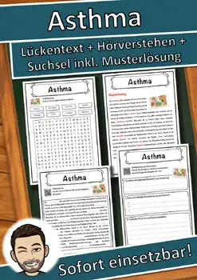
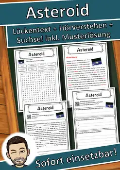
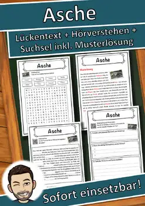
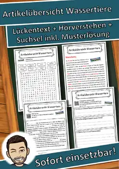
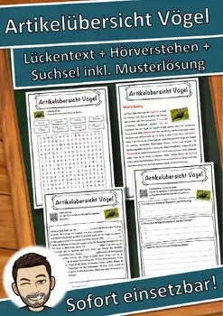

New resources
My newest resources appear here first. The list updates automatically.
48 resources

Atoll – Arbeitsblatt Lückentext, Hörverstehen & Suchsel | Deutsch / German

Atmung – Arbeitsblatt Lückentext, Hörverstehen & Suchsel | Deutsch / German

Atmosphäre – Arbeitsblatt Lückentext, Hörverstehen & Suchsel | Deutsch / German

Athene – Arbeitsblatt Lückentext, Hörverstehen & Suchsel | Deutsch / German

Atheismus – Arbeitsblatt Lückentext, Hörverstehen & Suchsel | Deutsch / German

Asyl – Arbeitsblatt Lückentext, Hörverstehen & Suchsel | Deutsch / German

Astronomie – Arbeitsblatt Lückentext, Hörverstehen & Suchsel | Deutsch / German
Astronaut – Arbeitsblatt Lückentext, Hörverstehen & Suchsel | Deutsch / German

Astrid Lindgren – Arbeitsblatt Lückentext & Hörverstehen (Deutsch / German)

Asthma – Arbeitsblatt Lückentext, Hörverstehen & Suchsel | Deutsch / German

Asteroid – Arbeitsblatt Lückentext, Hörverstehen & Suchsel | Deutsch / German
Aschermittwoch – Arbeitsblatt Lückentext & Hörverstehen (Deutsch / German)
Aschenputtel – Arbeitsblatt Lückentext & Hörverstehen (Deutsch / German)

Asche – Arbeitsblatt Lückentext, Hörverstehen & Suchsel | Deutsch / German
Arzt – Arbeitsblatt Lückentext, Hörverstehen & Suchsel | Deutsch / German
Artus – Arbeitsblatt Lückentext, Hörverstehen & Suchsel | Deutsch / German
Artischocke – Arbeitsblatt Lückentext, Hörverstehen & Suchsel | Deutsch / German

Artikelübersicht Wassertiere – Deutsch / German Arbeitsblatt

Artikelübersicht Vögel – Deutsch / German Arbeitsblatt

Artikelübersicht Säugetiere – Deutsch / German Arbeitsblatt

Artikelübersicht Spannendes und Schauriges – Deutsch / German Arbeitsblatt

Artikelübersicht Pflanzen – Deutsch / German Arbeitsblatt

Artikelübersicht Musik – Deutsch / German Arbeitsblatt

Artikelübersicht Fußball – Deutsch / German Arbeitsblatt

Artikelübersicht Christentum – Deutsch / German Arbeitsblatt

Arthur Conan Doyle – Arbeitsblatt Lückentext & Hörverstehen (Deutsch / German)

Artenvielfalt – Arbeitsblatt Lückentext & Hörverstehen (Deutsch / German)

Armut – Arbeitsblatt Lückentext, Hörverstehen & Suchsel | Deutsch / German

Armee – Arbeitsblatt Lückentext, Hörverstehen & Suchsel | Deutsch / German

Armbrust – Arbeitsblatt Lückentext, Hörverstehen & Suchsel | Deutsch / German

Arm – Arbeitsblatt Lückentext, Hörverstehen & Suchsel | Deutsch / German

Aristoteles – Arbeitsblatt Lückentext, Hörverstehen & Suchsel | Deutsch / German

Arie – Arbeitsblatt Lückentext, Hörverstehen & Suchsel | Deutsch / German

Ares – Arbeitsblatt Lückentext, Hörverstehen & Suchsel | Deutsch / German

Archäologie – Arbeitsblatt Lückentext, Hörverstehen & Suchsel | Deutsch / German

Architektur – Arbeitsblatt Lückentext, Hörverstehen & Suchsel | Deutsch / German

Archimedes – Arbeitsblatt Lückentext, Hörverstehen & Suchsel | Deutsch / German

Arbeitslosigkeit – Arbeitsblatt Lückentext & Hörverstehen (Deutsch / German)

Arbeit – Arbeitsblatt Lückentext, Hörverstehen & Suchsel | Deutsch / German

Arabischer Frühling – Arbeitsblatt Lückentext & Hörverstehen (Deutsch / German)

Arabische Sprache – Arbeitsblatt Lückentext & Hörverstehen (Deutsch / German)

Aquarium – Arbeitsblatt Lückentext, Hörverstehen & Suchsel | Deutsch / German

Aprikose – Arbeitsblatt Lückentext, Hörverstehen & Suchsel | Deutsch / German

App – Arbeitsblatt Lückentext, Hörverstehen & Suchsel | Deutsch / German

Apotheke – Arbeitsblatt Lückentext, Hörverstehen & Suchsel | Deutsch / German

Apostel – Arbeitsblatt Lückentext, Hörverstehen & Suchsel | Deutsch / German

Apollo 11 – Arbeitsblatt Lückentext, Hörverstehen & Suchsel | Deutsch / German

Aphrodite – Arbeitsblatt Lückentext, Hörverstehen & Suchsel | Deutsch / German
No resources found – try a different search term or filter.